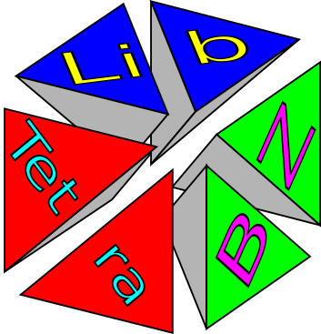

日本語 English
libTetraBZ
Libtetrabz is a library which parform efficiently the Brillouin-zone integration in the electronic structure calculation in a solid by using the tetrahedron method.



For citing libtetrabz
We would appreciate if you cite the following article in your research with libtetrabz.
News
-
2017/7/7 libtetrabz-2.0.0 is released
For more details, please see the release note.
-
2016/4/15 LibTetraBZ is used by RSDFT ver. 1.3.0.
LibTetraBZ is used by a first-principles program package RSDFT based on the density functional theory and real-space finite-difference method.